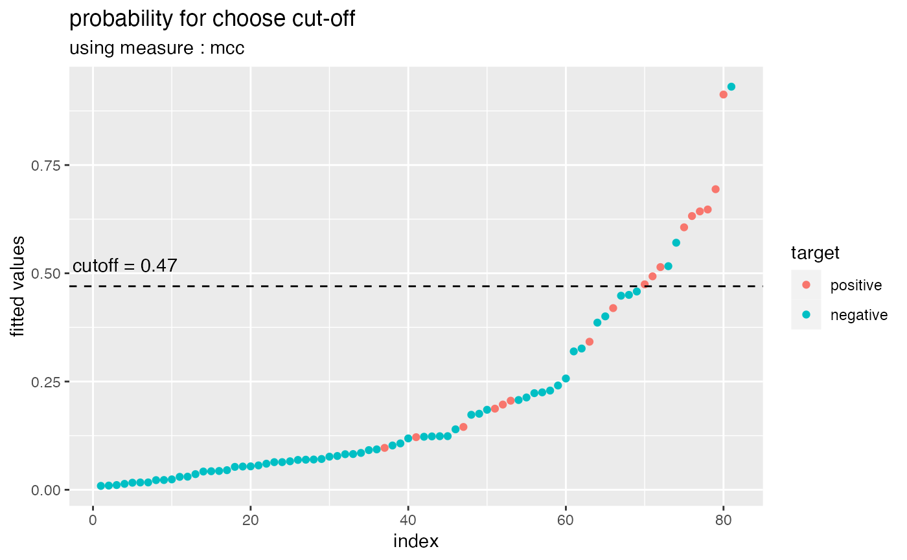
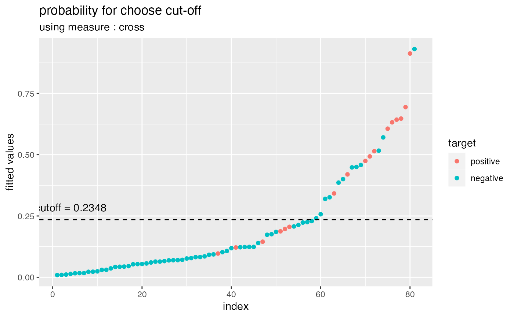
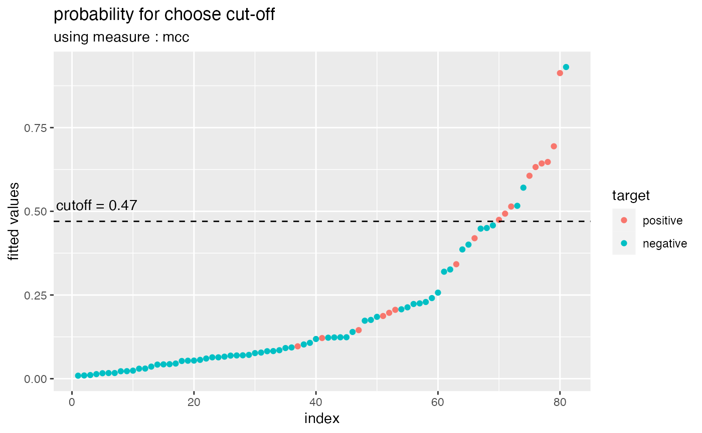
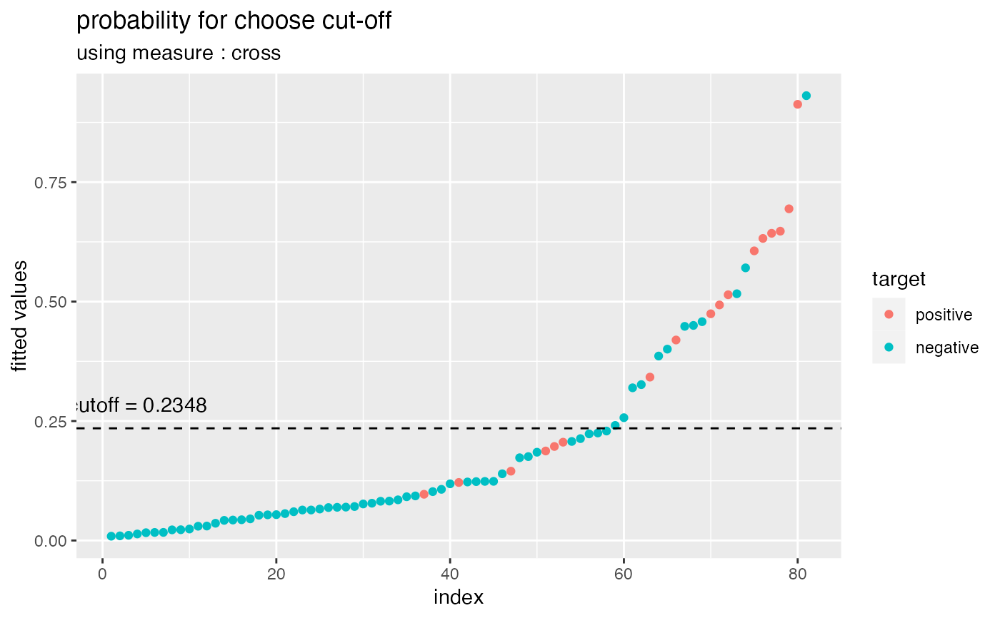

plot_cutoff() visualizes a plot to select a cut-off that separates positive and negative from the probabilities that are predictions of a binary classification, and suggests a cut-off.
Arguments
- predicted
numeric. the predicted value of binary classification
- y
factor or character. the actual value of binary classification
- positive
level of positive class of binary classification
- type
character. Visualization type. "mcc" draw the Matthews Correlation Coefficient scatter plot, "density" draw the density plot of negative and positive, and "prob" draws line or points plots of the predicted probability.
- measure
character. The kind of measure that calculates the cutoff. "mcc" is the Matthews Correlation Coefficient, "cross" is the point where the positive and negative densities cross, and "half" is the median of the probability, 0.5
Value
numeric. cut-off value
Details
If the type argument is "prob", visualize the points plot if the number of observations is less than 100. If the observation is greater than 100, draw a line plot. In this case, the speed of visualization can be slow.
Examples
# \donttest{
library(ggplot2)
library(rpart)
data(kyphosis)
fit <- glm(Kyphosis ~., family = binomial, kyphosis)
pred <- predict(fit, type = "response")
cutoff <- plot_cutoff(pred, kyphosis$Kyphosis, "present", type = "mcc")
 cutoff
#> [1] 0.47
plot_cutoff(pred, kyphosis$Kyphosis, "present", type = "mcc", measure = "cross")
plot_cutoff(pred, kyphosis$Kyphosis, "present", type = "mcc", measure = "half")
cutoff
#> [1] 0.47
plot_cutoff(pred, kyphosis$Kyphosis, "present", type = "mcc", measure = "cross")
plot_cutoff(pred, kyphosis$Kyphosis, "present", type = "mcc", measure = "half")
 plot_cutoff(pred, kyphosis$Kyphosis, "present", type = "density", measure = "mcc")
plot_cutoff(pred, kyphosis$Kyphosis, "present", type = "density", measure = "mcc")
 plot_cutoff(pred, kyphosis$Kyphosis, "present", type = "density", measure = "cross")
plot_cutoff(pred, kyphosis$Kyphosis, "present", type = "density", measure = "cross")
 plot_cutoff(pred, kyphosis$Kyphosis, "present", type = "density", measure = "half")
plot_cutoff(pred, kyphosis$Kyphosis, "present", type = "prob", measure = "mcc")

plot_cutoff(pred, kyphosis$Kyphosis, "present", type = "prob", measure = "cross")

plot_cutoff(pred, kyphosis$Kyphosis, "present", type = "prob", measure = "half")
# }
plot_cutoff(pred, kyphosis$Kyphosis, "present", type = "density", measure = "half")
plot_cutoff(pred, kyphosis$Kyphosis, "present", type = "prob", measure = "mcc")

plot_cutoff(pred, kyphosis$Kyphosis, "present", type = "prob", measure = "cross")

plot_cutoff(pred, kyphosis$Kyphosis, "present", type = "prob", measure = "half")
# }